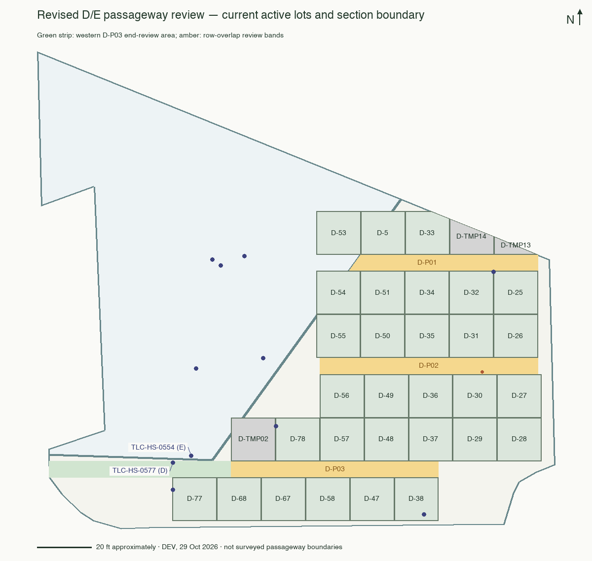
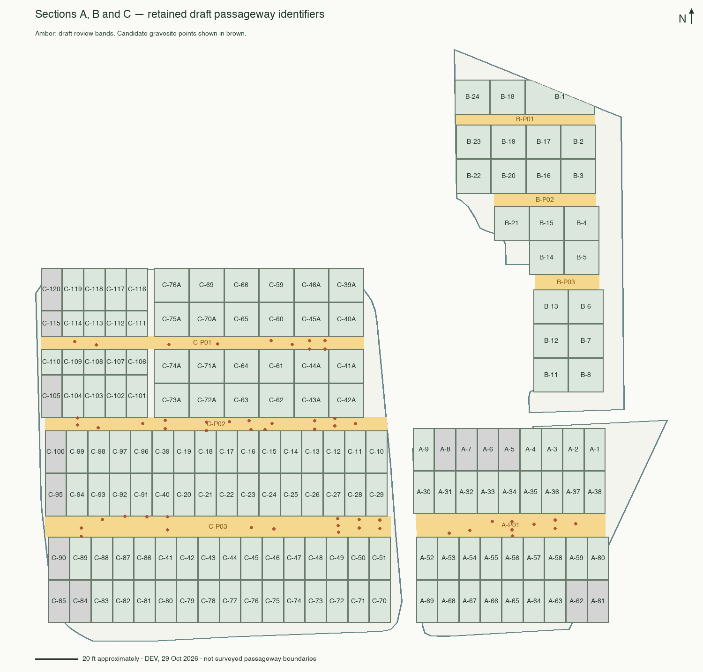

Read-only reevaluation of local DEV through migration 501, dated 29 October 2026. The earlier report used hosted TEST before these corrections. No passageway, ownership, registry, lot or assignment records were changed by this review.
Retain the ten draft IDs. A, B and C remain supported as before. Redraw the three D corridors using active lot rows and the current section outline. Do not use retired temporary lot outlines to define a passageway or carry the former broad D bands into E.
New D-P03 end candidate: TLC-GPS-0577 and TLC-HS-0577 fall in D, outside active lots, within the southern gap’s latitude span but west of the overlapping row ends. Review an extension to the current D/E boundary. This is a spatial candidate, not proof of a passageway deed.
Core bands use the overlapping east–west extent between opposing active lot rows, clipped to their section. Counts are gravesite representative points and independent marker points outside active lot polygons. They are not burial counts, sold rights, remaining capacity or confirmed assignments. Corridor-end screens are reported separately so narrowing a band does not erase candidates.
| Draft ID | Gravesite points | Marker points | Recommendation |
|---|---|---|---|
| A-P01 | 10 | 7 | Retain. Updated lot edges; candidate counts unchanged. |
| B-P01 | 0 | 0 | Retain; burial use unverified. |
| B-P02 | 0 | 0 | Retain; burial use unverified. |
| B-P03 | 0 | 0 | Retain; burial use unverified. |
| C-P01 | 10 | 10 | Retain original registry crosswalk. |
| C-P02 | 18 | 15 | Retain crosswalk and unresolved source references. |
| C-P03 | 16 | 15 | Retain original registry crosswalk. |
| D-P01 | 0 | 0 | Redraw against active lots and clip to D. Earlier E candidates excluded. |
| D-P02 | 1 | 0 | TLC-GPS-0453-02 remains the single core candidate; geometry is estimated. |
| D-P03 | 0 | 0 | Core has no points. Western end screen adds TLC-GPS-0577 and TLC-HS-0577; extent needs review. |

The earlier D-P01/D-P02 broad bands contained seven gravesite points and five marker points. Six of those gravesite points and all five marker points are spatially in E. The six gravesites are TLC-GPS-0504, 0517, 0518, 0568, 0569 and 0570. Preserve their E context. Retiring nearby provisional lots does not establish that this land is a passageway.
D-TMP01 is now standard lot D-78. D-TMP02, D-TMP13 and D-TMP14 remain non-burial lots; keep those separate from passageway geometry. The thirteen retired TMP lots are historical outlines, not active corridor boundaries. The corrected marker points TLC-HS-0447, 0496, 0500 and 0463 are inside D-25, D-78, D-77 and D-38 respectively; do not treat them as passageway evidence merely because older outlines missed them.

A-P01 remains between A-30–A-38 and A-52–A-60. Use the corrected edges after the northward group shift. The current point candidates remain 10 gravesites and 7 markers. B-P01–P03 still have no point candidates in the checked bands; that does not establish burial availability or remove the historical utility concerns. C-P01–P03 retain their prior layout and counts.
Keep A-P01, B-P01–P03, C-P01–P03 and D-P01–P03 stable. Treat adjacent lot pairs as historical location references, not the permanent passageway name. Preserve exact workbook, worksheet, row/cell, original wording and later correction notes separately from the current geometry and lot aliases.
The original 2017/2022 crosswalk remains applicable: retain the 79-102 → 97-102 correction (2017 G207; 2022 F216/H216), unresolved 30-73 and separate 39-73 rows, missing A suffix interpretations, single-lot Passage 98, and transfer history without merging allocations. No B/D-specific passage allocation has been established by this reevaluation. The 0577 candidate does not supply a missing deed.
Recommended next step: review D-P03’s western limit and TLC-GPS-0453-02 in the field or supporting records; then approve corridor outlines separately from individual grave or ownership assignments. Do not create E passageway IDs solely because E contains graves outside lots.
Original A/C proposal and full source crosswalk · Original B/D addendum (historical layout)